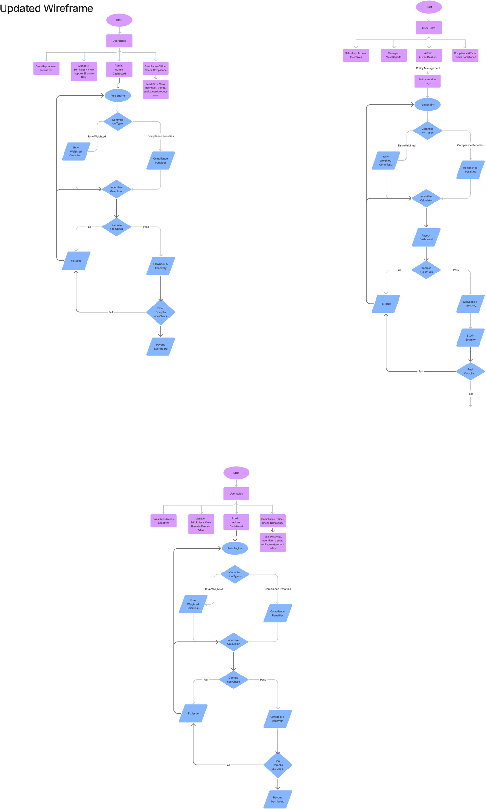
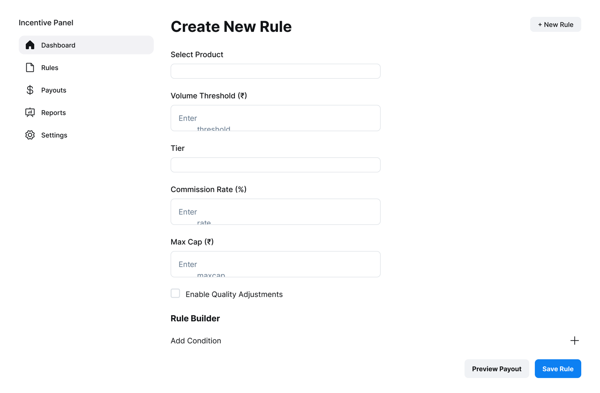
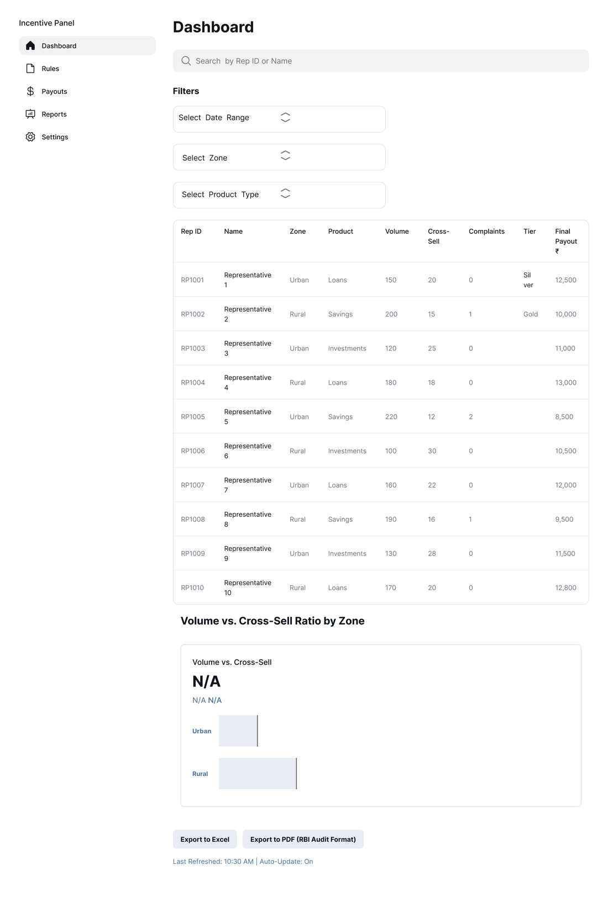

Dynamic Incentive Management CRM
Banks ran sales incentives by hand, structures that differed by branch, region, and product, and changed constantly with new schemes and regulations. The manual math meant errors, delayed payouts, and disputes. I researched the problem and mapped the logic for a rule-driven CRM that computes every incentive automatically and transparently, the system behind a roughly 60% drop in disputes.

Understood why a manual, branch-by-branch incentive process produced errors, delays, and disputes.
Mapped every path a payout takes, from rules and roles through compliance checks, clawbacks, and final payout.
Researched and shaped two features the system leans on: clawback and recovery, and the audit trail.
Every branch had different incentive rules, and the math was done by hand.
Incentive structures at a bank vary by branch, region, and product, and they change constantly as new schemes launch, regulations shift, and seasonal offers come and go. Most CRMs encode commission logic as hardcoded, static rules, so every one of those changes needs central IT to implement. So branches fell back on calculating incentives manually.
Manual math at that scale produces errors, delayed payouts, and, above all, disputes. A rep who can't see how a number was reached has no reason to trust it, and that erodes morale on the exact behavior the incentives are meant to drive.
One configurable system where each branch defines its own rules, every payout is computed automatically, and the calculation is transparent enough that reps and managers stop arguing about it.
I mapped every path a payout could take.
The answer was a rule-driven engine that calculates incentives in real time and keeps a full audit trail. Before any interface existed, I mapped the logic end to end: user roles into the rule engine, commission types splitting into risk-weighted and compliance-penalty paths, the incentive calculator, a compliance check, clawback and recovery, and final payout, with policy version logs so every rule change stays auditable.

Iterating the flow was the work. Later passes added policy version logs so rule changes are auditable for compliance, added ESOP eligibility, and made the fail-loop explicit, so a failed compliance check routes back to Fix Issue instead of quietly breaking a payout.
Rules a branch can change without calling IT.
The core of the system is a rule engine that branch admins configure through a UI, no code. Rules are stored as logic and evaluated at runtime, which is what lets a branch adjust its own incentives the moment a scheme or regulation changes.
Different incentive bands per product, with thresholds and a maximum cap.
The same sale rewards a Senior RM and a Branch Head differently.
Stack conditions, a time-bound campaign plus a product category, into one rule.
Branch → Region → Zone → National, with overrides allowed at each level.

From a closed deal to a logged, auditable payout.
A rep closes a high-value loan.
It checks every rule that applies to that product, region, and designation.
Computed instantly, and recalculated on status updates or retroactive rule changes.
The full trail is recorded per employee, ready for payout and compliance review.
Every payout, traceable.
Disputes fall when reps and managers see the same numbers and the trail behind them. The system keeps a complete incentive trail per employee and versions every rule change for compliance. The audit trail was one of my two areas. I prototyped the interface in Figma to show how the mapped logic becomes something a manager actually uses.

The Incentive Management view (shown at the top) breaks out base payout, quality adjustments, zone bonus, clawbacks, and points per rep, with compliance issues surfaced at the top rather than buried.
60% fewer disputes, 70% faster computation.
The throughline is the same one the diagram is built around: automate the math, make every step visible, and disputes have nothing to feed on.
Two features came out of my research.
My research mapped how banks actually structure sales incentives, benchmarked that against fintech models, and surfaced where the existing approach fell short. Two features came out of it, and both started as a gap in the research, not a line in the brief.
Clawback & recovery
Closing a sale isn't the same as making a good one. A loan that defaults or a policy that lapses shouldn't keep paying out. I defined the conditions for reversing or recovering a payout, tied to quality of sale, like loan repayment consistency, rather than the close alone. That became the Clawback & Recovery step in the flow.
The audit trail
A disputed number is only resolvable if you can trace it. I made the case that every payout should map back to the exact rule, version, and inputs that produced it, so a rule change is logged rather than quietly overwritten. That traceability is why a disagreement becomes a lookup instead of a standoff.
Disputes are usually a transparency problem, not a math problem.
People don't trust numbers they can't trace. Most of the value here came from making the calculation visible, not from changing the math.
The flow diagram forced every edge case into the open, failed compliance checks, clawbacks, retroactive rule changes, before a single screen existed.
A spreadsheet can hold the numbers. It can't make people trust them, and that trust started with mapping the logic, not designing a screen.